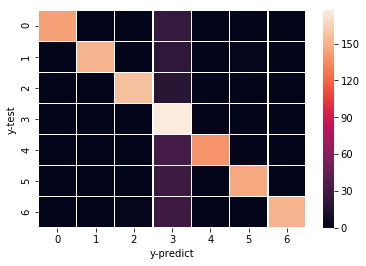

In-silico fluxes and statistical regularization
In one of my previous blogs, I talked about a well-established technique (Flux Balance Analysis) to simulate metabolic fluxes using a genome-scale metabolic network model. Flux Balance Analysis (FBA) has multiple advantages, including quickly and efficiently simulating organism’s phenotype for different growth media. Other interesting applications include simulating phenotypes for in-silico knockouts OR in-silico addition of a new reaction in a pathway. For additional documentation or applications, refer to the original FBA paper.
All aspects of this post were already published by Wilke lab (I was also involved in that project at that time). More info on the original work can be found here. To summarize the original findings of the paper, I quote from the abstract: “Our analysis provides several important physiological and statistical insights. First, we show that by analyzing metabolic end products we can consistently predict growth conditions. Second, prediction is reliable even in the presence of small amounts of impurities. Third, flux through a relatively small number of reactions per growth source (∼10) is sufficient for accurate prediction. Fourth, combining the predictions from two separate models, one trained only on carbon sources and one only on nitrogen sources, performs better than models trained to perform joint prediction. Finally, that separate predictions perform better than a more sophisticated joint prediction scheme suggests that carbon and nitrogen utilization pathways, despite jointly affecting cellular growth, may be fairly decoupled in terms of their dependence on specific assortments of molecular precursors.”
In this post, I will focus on re-analyzing inverse problem of predicting the growth conditions, given the in-silico fluxes (e.g., from FBA). Even this aspect is well covered in the paper as seen from the abstract above, however here I used python (scikit-learn module) instead of R GLMNET package. This also helps confirm the findings with a different tool, and with newer tools.
from __future__ import print_function
import cobra
# import deep learning and other modules
import numpy as np
import pandas as pd
from os.path import join# fix random seed for reproducibility
seed = 7
np.random.seed(7)The dataset used in this post can be found here. You will see many datasets used in the original publication and you can pick any of those. I picked FluxData49ReplicatesNoiseLevel1.csv and renamed to syntheticFluxData.csv. You can also see additional information in the bitbucket repo here that is used to create this blog.
# Flux dataset from predicting bacterial growth conditions study -- for current purposes, THIS IS MOSTLY CONSIDERED RANDOM SYNTHETIC DATA
dataset1 = pd.read_csv("../Data/syntheticFluxData.csv", delimiter=',', header=None)This dataset is approx. 5K by 2K i.e., 5000 rows and 2000 columns (a good high-dimensional dataset for testing regression techniques). Additonally, it is very sparse. Only few reactions i.e., columns will result in in-silico fluxes because of the inherent behavior of a metabolic network for simple growth conditions and it is to be noted that the fluxes generated are using a mathematical approach e.g., FBA ( as earlier mentioned ).
Here is how the truncated data looks like. The last 3 columns are the growth conditions. We added these to the FBA output to have a format of [Input]-[Output] in the same dataframe for data-analyses purposes.
dataset1.head()| 0 | 1 | 2 | 3 | 4 | 5 | 6 | 7 | 8 | 9 | … | 2375 | 2376 | 2377 | 2378 | 2379 | 2380 | 2381 | 2382 | 2383 | 2384 | |
|---|---|---|---|---|---|---|---|---|---|---|---|---|---|---|---|---|---|---|---|---|---|
| 0 | 0.000000e+00 | 0.000000e+00 | 0.000000e+00 | 0.000000e+00 | 0.000000e+00 | 0.0 | 0.0 | 0.0 | 0.0 | 0.0 | … | 0.0 | -0.0 | 0 | 0 | 0.004649 | 0 | 0.004649 | 1 | 1 | 1 |
| 1 | 0.000000e+00 | 4.692800e-34 | 1.025800e-27 | 6.151300e-29 | 0.000000e+00 | 0.0 | 0.0 | 0.0 | 0.0 | 0.0 | … | 0.0 | -0.0 | 0 | 0 | 0.004571 | 0 | 0.004571 | 1 | 2 | 2 |
| 2 | 1.348900e-29 | 0.000000e+00 | 0.000000e+00 | 7.639300e-28 | 1.029200e-27 | 0.0 | 0.0 | 0.0 | 0.0 | 0.0 | … | 0.0 | -0.0 | 0 | 0 | 0.006978 | 0 | 0.006978 | 1 | 3 | 3 |
| 3 | 0.000000e+00 | 0.000000e+00 | 0.000000e+00 | 0.000000e+00 | 0.000000e+00 | 0.0 | 0.0 | 0.0 | 0.0 | 0.0 | … | 0.0 | -0.0 | 0 | 0 | 0.004584 | 0 | 0.004584 | 1 | 4 | 4 |
| 4 | 0.000000e+00 | 0.000000e+00 | 0.000000e+00 | 2.695900e-29 | 0.000000e+00 | 0.0 | 0.0 | 0.0 | 0.0 | 0.0 | … | 0.0 | -0.0 | 0 | 0 | 0.004760 | 0 | 0.004760 | 1 | 5 | 5 |
5 rows × 2385 columns
First 2381 columns are the in-silico fluxes generated from the flux balance analyses (FBA) for the input growth conditions
Information on the growth conditions is in columns 2382 and 2383. Column 2384 is just the pair-wise combination of 2382 and 2383.
Additonally, in the first 2381 columns, there are transport and exchange reactions that are not real, but are incorporated in the model that carry the metabolites in and out of the network. So, we removed them here (such reactions end with tpp and tex in the model used).
# Assuming iAF1260 model used in this repo has exchange/transport reactions that match to the synthetic data.
sbml_path = join("../Data","iAF1260.xml.gz")
iAF1260_ecoli_model = cobra.io.read_sbml_model(sbml_path)
iAF1260_reaction_IDs = [x.id for x in iAF1260_ecoli_model.reactions]
# There might be a better way to do this, but this explicitly conveys information
list_tpp_tex = []
for x in iAF1260_reaction_IDs:
if(x.endswith('tpp')):
list_tpp_tex.append(x)
if(x.endswith('tex')):
list_tpp_tex.append(x)
# columns to remove from above dataset
IDs_of_cols_to_remove = [iAF1260_reaction_IDs.index(i) for i in list_tpp_tex]
# append output columns as well that are to be removed from Input
IDs_of_cols_to_remove.extend(range(2382,2385)) # Note range covers 2382 to 2384Data clean-up is done.
# retain columns that are NOT IDs_of_cols_to_remove, fit in regression methods automatically scales these
X = dataset1.iloc[:,dataset1.columns.difference(IDs_of_cols_to_remove)]
# Use carbon source as y (i.e., col 2382) --- Nitrogen source is 2383, while pair-wise C/N is 2384
fba_y = dataset1.iloc[:,2382]This is how the Input looks now (i.e., without the output and the transport/exchange reactions) For this post, instead of focussing on all the 3 columns of the output i.e., C-source, N-source, and pairwise C/N, I used only C-source as output. So, given the in-silico fluxes, we are predicting what carbon source is it coming from? You might think that the information in Nitrogen source is also key to predict what carbon source, but at least one of the things we noticed in our earlier study is that separate prediction works better than joint prediction (i.e., predicting carbon and nitrogen sources separately works better than predicting C-N pairwise). Please refer to the original paper for more details.
X.head()| 0 | 1 | 2 | 3 | 4 | 5 | 6 | 11 | 12 | 17 | … | 2368 | 2369 | 2370 | 2371 | 2372 | 2374 | 2375 | 2377 | 2378 | 2380 | |
|---|---|---|---|---|---|---|---|---|---|---|---|---|---|---|---|---|---|---|---|---|---|
| 0 | 0.000000e+00 | 0.000000e+00 | 0.000000e+00 | 0.000000e+00 | 0.000000e+00 | 0.0 | 0.0 | 0.0 | 0.2 | 0.0 | … | -0.0 | 0.6 | -0.0 | -0.0 | 0.0 | 0 | 0.0 | 0 | 0 | 0 |
| 1 | 0.000000e+00 | 4.692800e-34 | 1.025800e-27 | 6.151300e-29 | 0.000000e+00 | 0.0 | 0.0 | 0.0 | 0.0 | 0.0 | … | -0.0 | 0.8 | -0.0 | 0.2 | 0.2 | 0 | 0.0 | 0 | 0 | 0 |
| 2 | 1.348900e-29 | 0.000000e+00 | 0.000000e+00 | 7.639300e-28 | 1.029200e-27 | 0.0 | 0.0 | 0.0 | 0.2 | 0.0 | … | -0.0 | 0.6 | -0.0 | -0.0 | 0.0 | 0 | 0.0 | 0 | 0 | 0 |
| 3 | 0.000000e+00 | 0.000000e+00 | 0.000000e+00 | 0.000000e+00 | 0.000000e+00 | 0.0 | 0.0 | 0.0 | 0.0 | 0.0 | … | -0.0 | 0.6 | -0.0 | -0.0 | 0.0 | 0 | 0.0 | 0 | 0 | 0 |
| 4 | 0.000000e+00 | 0.000000e+00 | 0.000000e+00 | 2.695900e-29 | 0.000000e+00 | 0.0 | 0.0 | 0.0 | 0.0 | 0.0 | … | -0.0 | 0.6 | -0.0 | -0.0 | 0.0 | 0 | 0.0 | 0 | 0 | 0 |
5 rows × 2068 columns
Now, the usual method of dividing the data into training and testing. We use training dataset to build the model and predict using test data. Another method i.e., Cross-validation by different fold can also be used.
test_size = 0.25 tells that the test data is 25%, and the rest is training data.
# Split data into training and test (note the encoded_y is a single column)
from sklearn.model_selection import train_test_split
X_train, X_test, fba_y_train, fba_y_test = train_test_split(X, fba_y, test_size=0.25, random_state=0)The following couple of lines are key to building a logistic regression model with regularization. We used a solver called ‘sag’ that supports ‘l2’ penalty. Instead of the usual multinomial classification, I used ‘ovr’ i.e., one-vs-rest. You can try multinomial as multi_class as well. Another thing to note is a large max_iter value. I used the same value that was used previously in the paper. A low number (like 100 or 1000) might not result in convergence of the coefficients. Note that this problem has more than 1000 features!
from sklearn.linear_model import LogisticRegression
log_lasso_fba = LogisticRegression(penalty='l2', solver='sag', multi_class='ovr', max_iter=9000000)Build the lasso model on the training data
log_lasso_fba.fit(X_train, fba_y_train)LogisticRegression(C=1.0, class_weight=None, dual=False, fit_intercept=True,
intercept_scaling=1, max_iter=9000000, multi_class='ovr',
n_jobs=None, penalty='l2', random_state=None, solver='sag',
tol=0.0001, verbose=0, warm_start=False)Predict with test data
fba_y_test_log = log_lasso_fba.predict(X_test)Create a confusion matrix to see how many of the predicted values match with the original response variable.
# confusion matrix
from sklearn.metrics import confusion_matrix
confusion_matrix(fba_y_test, fba_y_test_log)array([[143, 0, 0, 25, 0, 1, 0],
[ 0, 151, 0, 22, 0, 2, 0],
[ 0, 0, 157, 18, 0, 0, 0],
[ 0, 0, 0, 177, 1, 0, 0],
[ 0, 0, 0, 32, 138, 1, 0],
[ 0, 0, 0, 29, 0, 146, 0],
[ 0, 0, 2, 29, 0, 0, 151]], dtype=int64)For the data I picked, there is a heatmap in the original paper that shows the result of the similar analyses I did above. The 4th column seems to be acetate.
You can read the paper to see why acetate is predicted more often than other carbon sources!
Similar heatmap can be drawn using something like this:
data_4_heatmap = confusion_matrix(fba_y_test, fba_y_test_log)
import matplotlib.pyplot as plt
import seaborn as sns
ax = sns.heatmap(data_4_heatmap, linewidth=0.5)
plt.xlabel('y-predict')
plt.ylabel('y-test')
plt.show()
If you’re also interested in the previous work and the R script, here it is: https://github.com/clauswilke/Ecoli_FBA_input_prediction/blob/master/Analysis/Scripts/GLMNET.R
So, it does seem that even after few years, the findings from the original work still hold with Python Scikit-learn module!